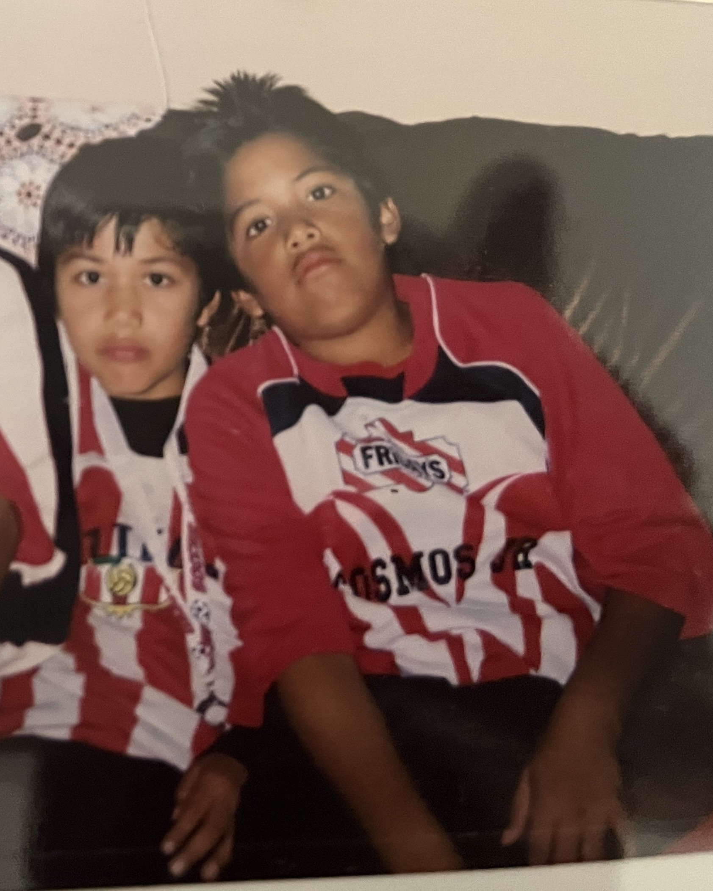
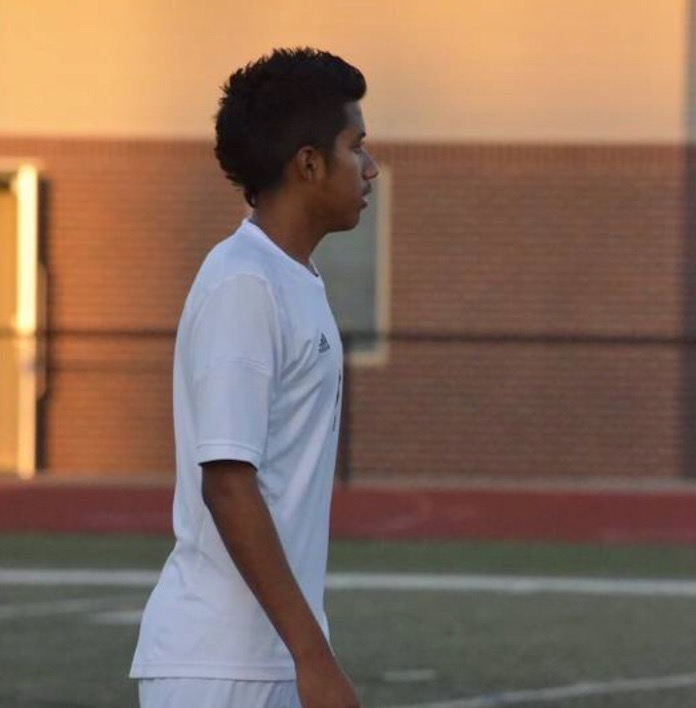
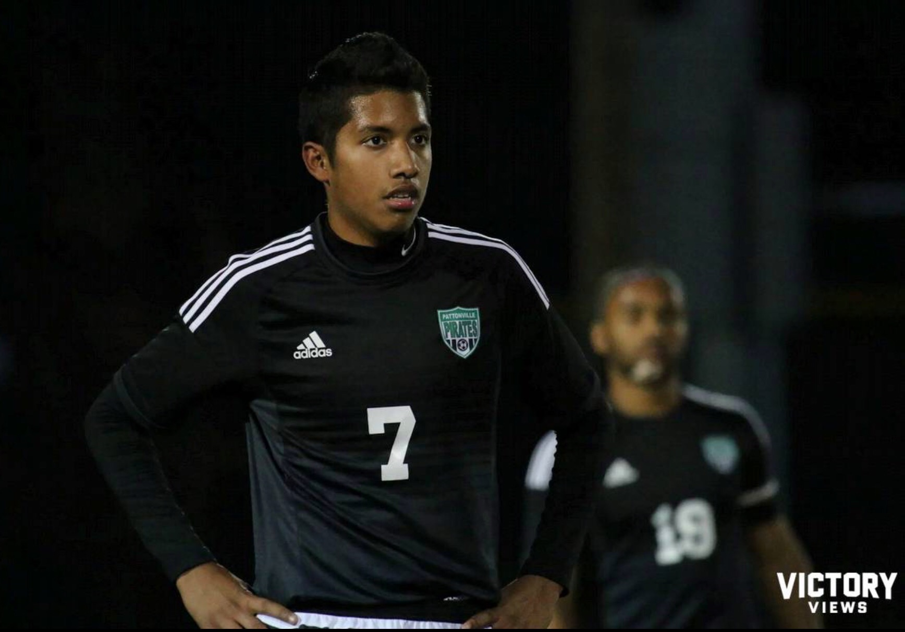
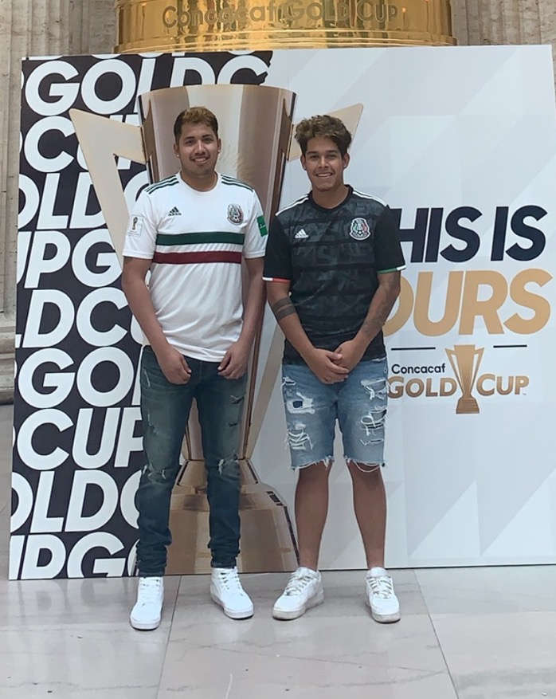

Early Life

Misael Barcenas was born on May 10, 1998 in Chicago, IL. During his childhood he would move to St.Louis, MO where he
would develop a passion for soccer. He would spend every afternoon playing soccer on the street with his two brothers in
hopes of one day becoming a professional soccer player. He grew up supporting the Mexican soccer team Club Deportivo
Guadalajara (Chivas).
Club Carrer
Cosmos Jr.

Misael started his soccer career at the age of 10 years old. He joined local club Cosmos Jrs. after hearing about it
from a classmate, Marcos. It would be here that he would consolidate himself as a defender, specifically playing at
right back. During the first season, the team would end the season undefeated winning the league. The following year
would not turn out to have the same ending. They would start the season off winning their first few games. Their next
opponent was Lightning, a new team to the league. They would suffer their first loss and would end the season second in
the league.
Pattonville Freshman Team

After a couple of years of not playing for a team, Misael would be entering highschool and in hopes of joining the
freshman team.He would spend all summer training with his friend Jacob with the aim of not only making the team, but
being one of the starters of the team. All the hard work would pay off for the both of them as they made the team and
were starters for the whole season. The season would end with a win against rival highschool team Ritenour.
Pattonville JV Team

The next year, Misael would play for the JV team. He was one of the 20 people that made the team from the original 30
players that tried out. The season would end with a record of 10 wins and 9 losses. It would be in a 10-0 win against
McCluer that Misael would score his first goal. While playing for the JV team, Misael would also start to play as a
striker and become team captain. He would end the season with a total of 10 goals.
Pattonville Varsity Team

The final team Misael played for was the Varsity team. He would again play in his normal position of right back.
Although there would be a lot of close games, they would end the season with 13 wins, 17 loses, and 2 draws. Of those
wins, they would again beat rival team, Ritenour, 2-0 at home and come second place in their District Conference.
Retirement

After Misael's last game for his highschool team he would go on to play for an indoor team he and his friends made. In
the first season they would end up making it to the final. In a heated and dramatic game they would end in a penalty
shoot out where they would be defeated. The team would sign up for a second season and would become champions. Misael
now plays soccer very rarely and spends a lot more time in the gym working out. He has also just begun to play golf and
is taking classes to become a web developer.